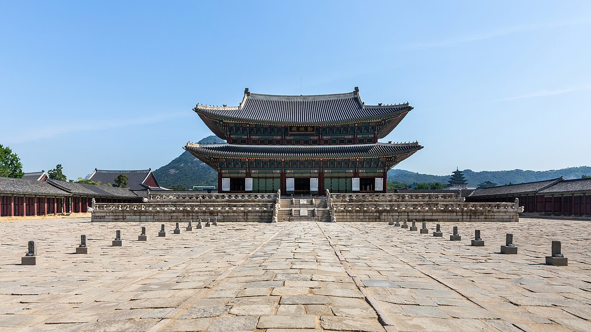
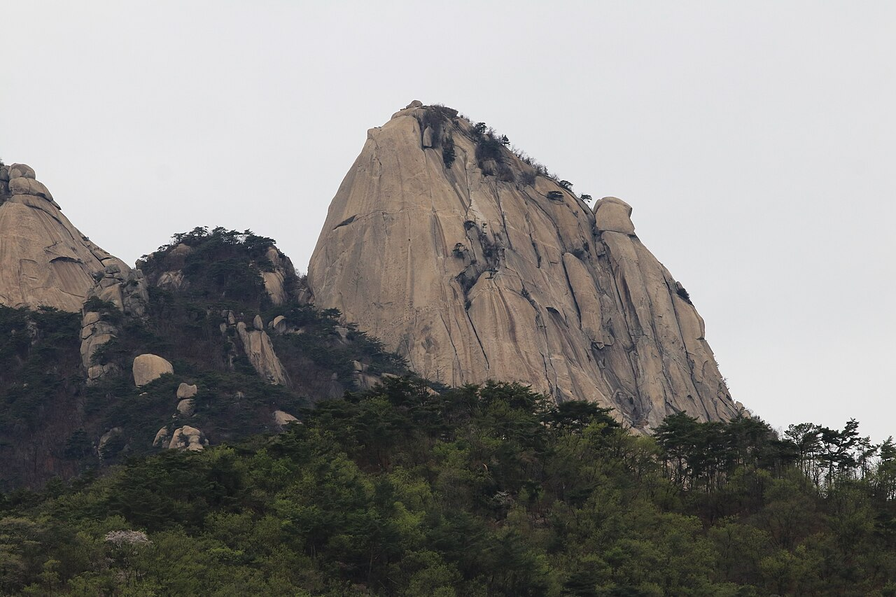
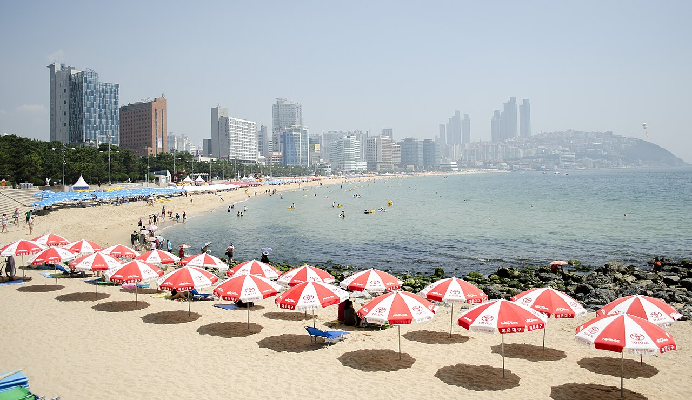

처음 가는 분께
서울 3일
대표 궁궐과 북촌, 한옥 골목을 걷는 핵심 코스.
한강의 야경, 계절이 바뀌는 산과 바다, 600년 된 궁궐, 그리고 K-팝과 K-뷰티까지. 한국의 다양한 얼굴을 한 번에 만나 보세요.
관심 가는 주제를 누르면 추천 장소를 바로 보여 드려요.
바다의 도시 부산, 화산섬 제주, 가을 단풍의 설악산까지. 카드를 누르면 지역 가이드가 열립니다.
샘플 코스를 보고, 일정 도구에서 입맛대로 바꿔 보세요.

대표 궁궐과 북촌, 한옥 골목을 걷는 핵심 코스.

남산, 서울숲, 북한산까지 걷기 좋은 서울 자연 코스.

바닷가 산책과 광안리 야경, 시장 음식을 즐기는 코스.
한국이 처음인 분들이 가장 많이 궁금해하는 내용만 골랐습니다.
공항철도, 리무진버스, 택시 중 내 상황에 맞는 방법을 고르는 요령.
교통 · 처음 가는 분전체 글 읽기 →교통카드 고르는 법과 지하철 환승 팁.
교통 · 꿀팁전체 글 읽기 →출발 전에 확인해야 할 공식 안내 모음.
여행 기본 · 공식 링크전체 글 읽기 →지도, 번역, 이동에 도움 되는 앱.
앱 · 처음 가는 분전체 글 읽기 →관광·쇼핑·밤 문화 중 무엇이 중요한지에 따른 동네 비교.
숙소 · 계획전체 글 읽기 →쉬운 메뉴와 주문 요령, 시장 이용 예절.
음식·문화 · 꿀팁전체 글 읽기 →여행 준비에 도움이 될 만한 외부 예약·체험 서비스를 소개합니다. 가격과 예약 조건은 각 사이트에서 확인하세요.